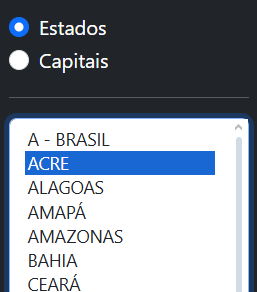
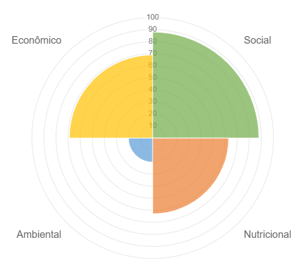
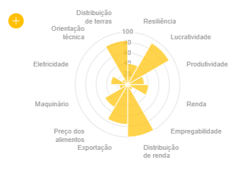
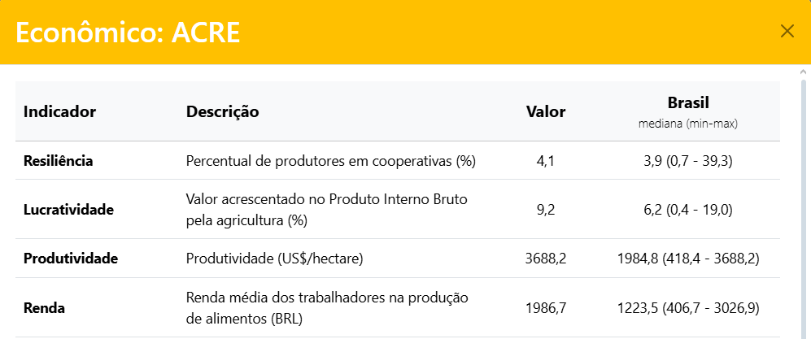

COMO USAR?
1. Escolha se deseja visualizar os indicadores dos estados ou das capitais brasileiras. Depois selecione o estado ou capital de interesse, clicando sobre o nome no campo logo abaixo.

2. Observe o valor do índice para o estado ou capital de interesse e compare com o valor mediano do Brasil.
OBS: os valores variam de 0 a 100.

3. Observe o valor de cada dimensão para o estado ou capital de interesse no gráfico central e compare com o valor mediano do Brasil apresentado nos ícones superiores.
OBS: os valores das dimensões do MISFS-R vão de 0 a 100, indicando a posição de cada estado ou capital em relação aos outros. Valores próximos de 0 significam que o estado ou a capital tem pontuações mais baixas diante do restante do país.

4. Observe a performance do estado ou capital escolhido para cada um dos indicadores. Os gráficos mostram o percentil ocupado pelo estado para cada indicador do MISFS-R. Percentis mais altos ou baixos devem ser interpretados conforme o contexto de cada indicador: os indicadores que estão inversamente relacionados à sustentabilidade estão assinalados com um "*" indicando que os estados que tem maior valor para esses indicadores, tem pior sustentabilidade de seus sistemas alimentares.
OBS: ressalta-se que as partes amarelas representam os indicadores econômicos, as em verdes, os indicadores sociais, as em laranja, os indicadores nutricionais e as azuis, os indicadores ambientais.

5. Para visualizar a descrição de cada indicador e seus valores brutos nos estados ou capitais de interesse, clique no ícone "+" ao lado de cada gráfico.

Social: